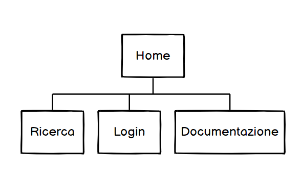
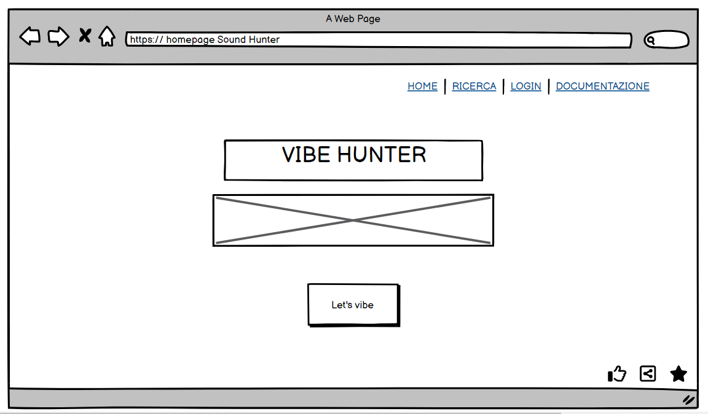
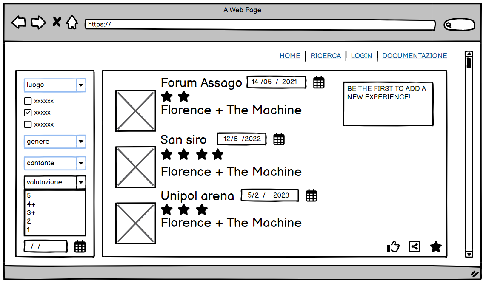
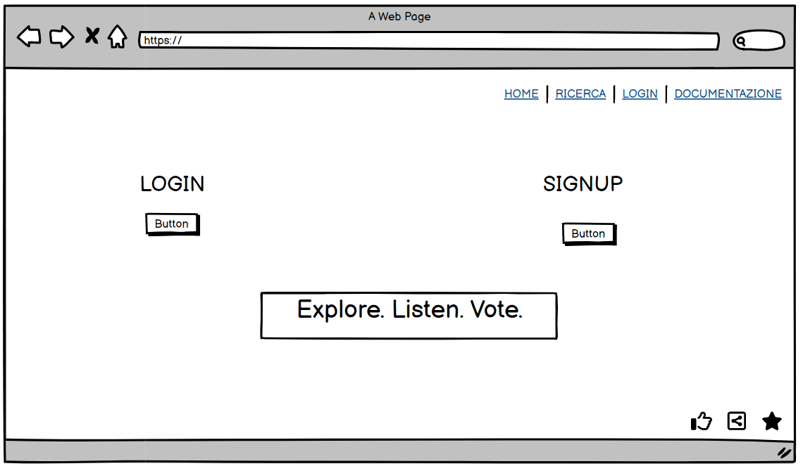
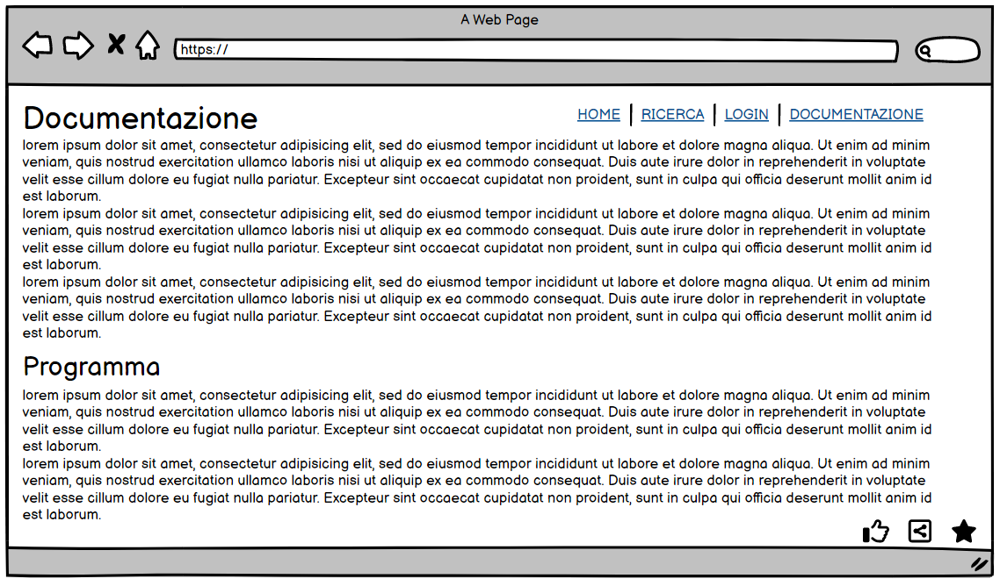

DOCUMENTAZIONE
Abstract
L’obiettivo di Vibes Hunter è quello di fornire una piattaforma sulla quale valutare secondo vari criteri la qualità di concerti passati catalogati in base ad artista, genere e luogo in cui l’evento si è svolto. Il sito si rivolge in particolare a persone tra 20-40 anni, sia coloro che frequentano spesso i concerti sia coloro che vogliono avere informazioni su questo mondo. Il sito permette anche la possibilità di creare un account e valutare i concerti a cui si è stati e aggiungerne di nuovi per ampliare la base di informazioni offerte.
Project Management Plan
Benchmarking
L’obiettivo del sito è raggiungere sia utenti amanti della musica che possano ampliare la base di dati del sito sia persone che vogliano informarsi su eventi e concerti. L’utente primario ha un range di età che va dai 20 ai 40 anni, appassionato di musica e con una forte curiosità verso i concerti. Due competitors del sito sono Tripadvisor ed Evensi. Rispetto a Tripadvisor il sito si concentra esclusivamente su concerti e non eventi generici. Infatti gli utenti di Tripadvisor ricercano soprattutto viaggi e turismo. Inoltre al contrario di Evensi permette all’utente di valutare concerti passati in base alle loro caratteristiche creando un database rivolto a eventi già avvenuti.
Struttura e layout
Architettura

Wireframe




Il triangolo cromatico dei colori è costituito da arancione, verde e viola (#F08600, #41FA6F, #7318F0). Sia il logo che i colori e le immagini vogliono dare un’impronta giovanile che richiami festa e divertimento ma anche affidabilità e sicurezza.
Linguaggi e strumenti
I linguaggi web utilizzati sono HTML e CSS. Altri strumenti utilizzati per la realizzazione del sito sono: Adobe, Balsamiq, Google Analytics, Font Awesome, Google Fonts, Similar Web, W3Schools, GitHub.
Communication Strategy
Background
Vibes Hunter unisce la possibilità di scoprire nuovi generi e cantanti insieme alla possibilità di valutare eventi. Inoltre sarebbe possibile ampliare le funzionalità di Vibes Hunter includendo anche le nuove date di ogni stadio o palazzetto. La caratteristica principale del sito è proprio quella di fornire una base specifica per coloro che sono indirizzati alla ricerca di concerti. Attraverso Vibes Hunter è anche possibile associare un evento a uno specifico luogo. L’obiettivo è creare una comunità che possa valutare i concerti in tutti i loro aspetti.
Obiettivi comunicativi
L’obiettivo è creare una piattaforma di ritrovo per appassionati e curiosi di musica e concerti. Per questo è necessario creare engagement sia rispetto a utenti occasionali (Facebook, 20 like) che fissi i quali aggiornino il database del sito (Instagram, 20 like) in modo da generare affluenze sul sito (100 visite).
Target audience e messaggio
Il sito si prefigge di raggiungere due tipo di utenti principali. Il primo riguarda persone che sono già state a molti concerti e possono ampliare il database del sito aggiungendo date di concerti oltre che scoprire eventi di nicchia. Il secondo riguarda persone che vogliono scoprire maggiori informazioni rispetto a concerti passati, sia sul cantante che sul luogo in cui si sono svolti, in modo da indirizzare meglio il proprio gusto musicale e le proprie decisioni. Questi utenti verranno raggiunti esclusivamente tramite social e con QR code da posizionare nei luoghi di futuri concerti che indirizzino al sito.
Promozione
La promozione del sito avverrà esclusivamente tramite social network in modo da fornire una comunicazione sempre veloce e dinamica. Inoltre vi è la possibilità di posizionare dei QR code nei luoghi di futuri concerti che indirizzino verso il sito in modo da canalizzare nuovi utenti.
Valutazione dei risultati